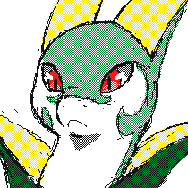

"You can't just open up the the story of my life and just go to page 783 and think you know me." -Arin Hanson
So what do you need to know about me? Well, I'm a 22 year old (at the time of writing this) living in the Big Sky State, Montana. I've been playing video games for the better part of my whole life and I have always dreamed of having an online presence. At the time of writing this, I'm attending the University of Montana.
 I'm a person who really loves video games, and most of my content online is related in some way to tabletop or digital games. My artwork, my writing, my everything. As well as video games I have interests in all kinds of digital media type hobbies like video and image production, design, and more. I also enjoy cooking (though I don't do it often) and gardening.
You've got the basic gist, so what more do you need? If you want to see a few of my stories, hang out with me, or just get to know me better, watch my content! Click right here to head over to my Twitch channel. That's going to be the best place to get to know me, either by watching streams back (I use webcam) or by joining in on one of the streams! I'd be happy to see you there, and anywhere you find me, hit me up with a follow. You won't be dissappinted when I come online. I promise.